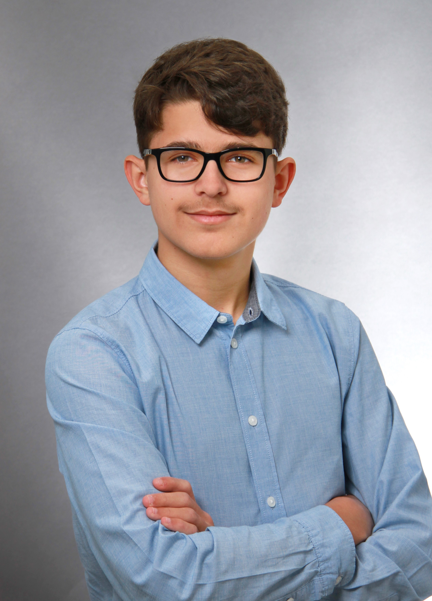

Über mich

Ich heisse Fabian Müller und wohne in Bischofszell. Momentan absolviere ich das 1. Lehrjahr als Informatiker Applikationsentwickler in der Firma Metrohm AG in Herisau. Das Programmieren, besonders mit objektorientierten Sprachen wie Java oder C#, gefällt mir sehr. Schon seit der 5. Klasse begeistert mich das Programmieren, damals noch mit Scratch, später dann mit höheren Sprachen. In meiner Freizeit spiele ich gerne Badminton in einem Plausch-Verein. Das Spielen von Story-Games ist eine weitere Leidenschaft von mir. Ich besitze ein gutes logisches Verständnis und räumliches Vorstellungsvermögen. Meine schulischen Stärken sind vor allem in der Mathematik, insbesondere in der Geometrie.